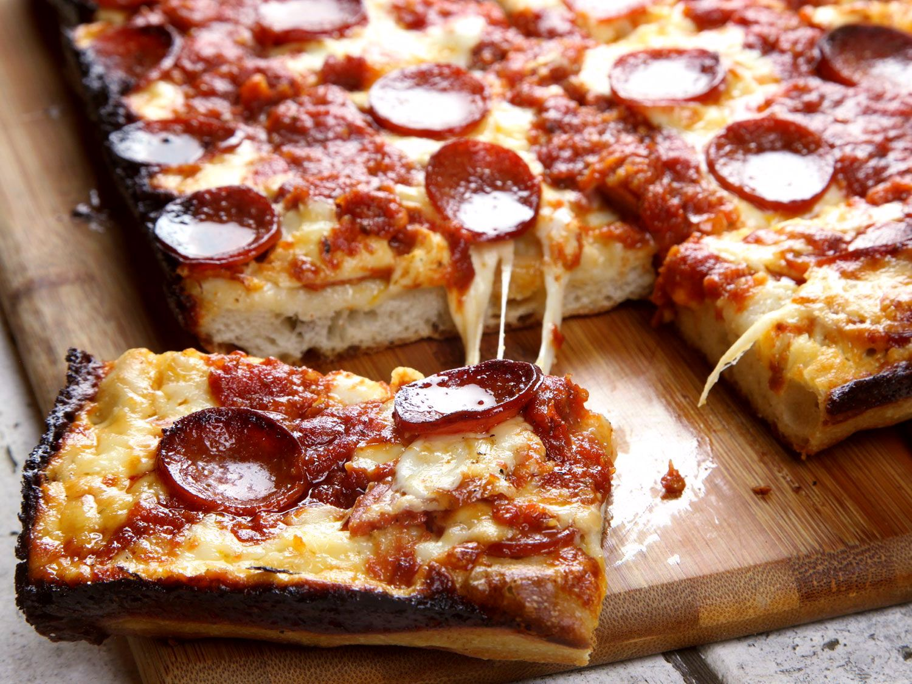

Return to Homepage
Detroit Style Pizza

Description
Pillowy soft dough surrounds a core of browned cheese and warm sauce. Italy may be known for its culinary
creations, but it can't be said that Detroit hasn't got its own piece of the pie to claim with this
mouthwatering treat. Easy to prepare and an outstanding result without a wood-fire oven, you'll be sure to enjoy
this recipe with your family and loved ones.
Ingredients
For the Dough:
- 300g bread flour
- 5g instant yeast
- 9g salt
- 220g water
- Extra-virgin olive oil, as needed
For the Sauce:
- 30ml extra-virgin olive oil
- 3 medium cloves of garlic, minced
- 5g dried oregano
- Dash red pepper flakes
- 800g can high-quality crushed tomatoes
- 6g granulated garlic powder
- 6g granulated onion powder
- 15g sugar
- Kosher salt, to taste
To Finish:
- 340g Brick cheese, cut into 1/2 inch cubes
- 340g high-quality natural casing pepperoni
Steps
- To Make the Dough in a Stand Mixer: Combine flour, yeast, and salt in the bowl of a stand mixer
fitted with a dough hook attachment. Stir to combine, then add water. Mix on low speed until dough comes together into a
rough ball, then shut off mixer and let rest for 10 minutes. Continue mixing at medium-low speed until dough forms
a smooth, silky ball, about 10 minutes longer. (It should stick to the bottom of the bowl as it kneads rather
than riding around the edges.) Remove dough hook, form dough into a tight ball, set in the bottom of the mixer
bowl, cover tightly with plastic wrap, and set aside in a warm place until dough has roughly doubled in volume,
about 2 hours.
- To Make the Dough in a Food Processor: Combine flour, yeast, and salt in the bowl of a food processor
and pulse to combine. Add water, then turn on processor and process until dough forms a ball that rides around
the bowl of the processor, about 30 seconds. Continue processing for 30 seconds longer. Transfer dough to a bowl,
form a tight ball, cover tightly with plastic wrap, and set aside in a warm place until dough has roughly doubled
in volume, about 2 hours.
- To Make the Dough by Hand: Combine flour, yeast, and salt in a large bowl. Whisk to combine, then add
water and stir with a wooden spoon until a rough ball of dough has formed. Set aside for 10 minutes. Turn dough
out onto a countertop and knead until a smooth, silky ball has formed, about 10 minutes. Transfer dough to a bowl, form
a tight ball, cover tightly with plastic wrap, and set aside in a warm place until dough has roughly doubled in
volume, about 2 hours.
- Pour a couple tablespoons olive oil in the bottom of a Detroit-style anodized aluminum pan or two 8- by 8-inch cake pans. (Split dough in half if using cake pans.) Transfer dough to pan(s) and turn to coat in oil. Press down
on dough and spread it toward the edges. You won't be able to get it all the way to the edges; this is okay. Spread it as much as you can without tearing, then cover tightly in plastic and set aside for 30 minutes to allow
dough to relax. Return to dough and stretch it out again. It should be able to reach the edges this time. If not, let
it rest a little more and try again. To get the dough to stay in the corners, stretch it up beyond the corners so
that it pulls back into place. Once dough is stretched, cover again and set aside while you make the sauce.
- For the Sauce: Adjust oven rack to lowest position and preheat oven to 550°F (290°C), or as close to
it as your oven gets. Heat 2 tablespoons (30ml) olive oil in a medium saucepan over medium heat until shimmering.
Add minced garlic, oregano, and pepper flakes and cook, stirring, until fragrant, about 30 seconds. Add
tomatoes, garlic powder, onion powder, and sugar. Bring to a simmer and cook until reduced to about 3 cups, about 30 minutes.
Season to taste with salt.
- To Form the Pizza: Press down on dough with your fingertips to remove any large air bubbles. Lay half
of pepperoni (if using) evenly over face of dough. Top with cheese, spreading it evenly all the way to the very
edges of the pan, then add remaining pepperoni. Spoon sauce over surface in 3 even rows. (You will need only about
half the sauce—save the rest for another pizza.)
- Transfer to oven and bake until edges are black and bubbly and exposed cheese on top is starting to lightly
brown, 12 to 15 minutes. Transfer to a trivet or folded kitchen towel on countertop.
- Run a thin metal spatula all the way around the edges of the pan to loosen the pizza. Carefully lift it out
and slide it onto a cutting board. Cut pizza and serve.
Special Equipment
Stand mixer or food processor (optional), Detroit-style 10- by 14-inch anodized aluminum pan (see note)
Notes
Brick cheese is a high-fat aged cheese from Wisconsin. It has a buttery flavor and browns very well, giving
Detroit pizza its distinct flavor. You can order it online from Amazon. If it's unavailable, you can use a
combination of Jack or young cheddar and low-moisture mozzarella.
For best results, use a Detroit-style anodized aluminum pan. If you can't get your hands on that kind of pan,
you can split the recipe into two square 8- by 8-inch cake pans.